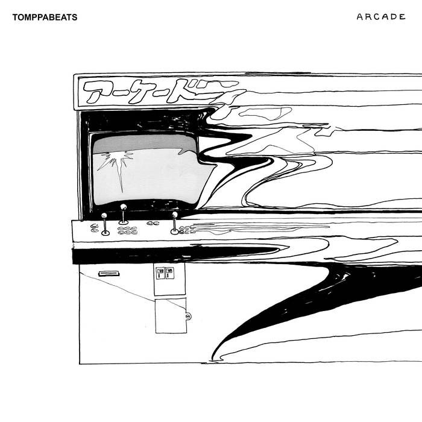
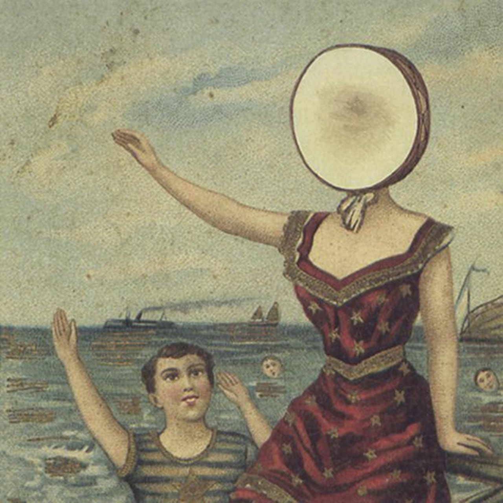

"Mood Provider 10", by Flamingosis. The last in his mood provider series. The beat switch on "Intrepid Method" nearly brings me to tears, possibly the best single track in the whole series!

Lauryn Hill's classic "The Miseducation of Lauryn Hill!" It's gotta go to "Doo Wap (That Thing)", for me, but is there really a bad track on here?

Arcade, a short lp by Tomppabeats with only two songs over two minutes, a beat tape really. Short and sweet with something to enjoy for all. "Just One More Dance" makes me wanna boogie >_>.

Neutral Milk Hotel's classic "In The Aeroplane Over The Sea." Some instrumental tracks, so high energy, low energy too. "Two-Headed Boy" has to be my favorite.